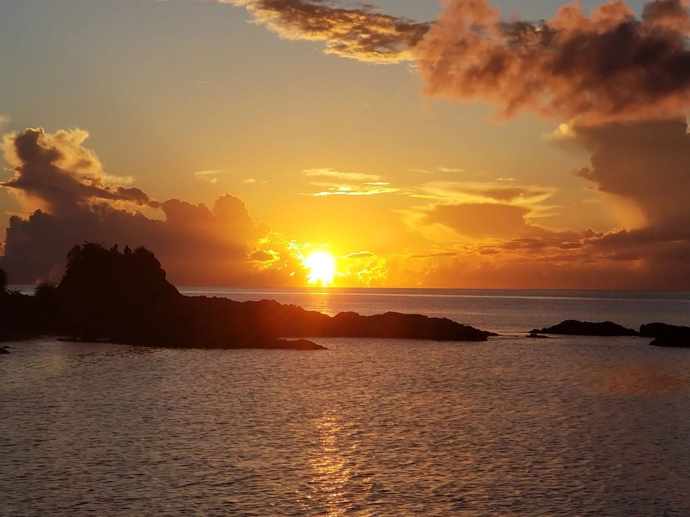
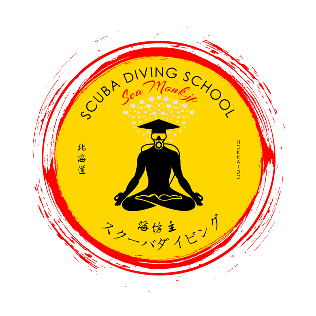

Wielojęzyczny serwis polskiej szkoły nurkowania na Okinawie. Oferta, miejsca nurkowe, przygotowanie uczestnika i kontakt zostały połączone w jedną czytelną ścieżkę.


Opublikowana realizacja
SeaMonk.jp
Responsywna architektura treści w języku angielskim i japońskim.
Profesjonalny punkt kontaktu dostępny przez całą dobę, przed rozmową lub rezerwacją.
Oferta i miejsca nurkowe przedstawione w jednej czytelnej ścieżce.
Zewnętrzna domena SeaMonk.jp przechodzi obecnie konserwację certyfikatu. Ten podgląd projektu działa niezależnie i bezpiecznie.